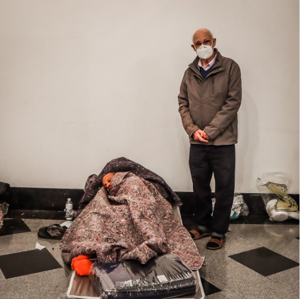

Após uma das magrudadas mais frias do ano de 2022, na quinta-feira (18/05) em São Paulo, pessoas em condição de rua sofreram com o descaso do governo. Alguns tiveram hipotermia, e outros não resistiram a madrugada. Isaias de Faria, de 66 anos, teve um mal súbito e uma convulsão em quanto aguardava pelo café da manhã no núcleo de convivência São Martinho, um abrigo na Zona Leste de SP.
Nesse mesmo dia, outro morador de rua teve uma hipotermia no núcleo de convivência e foi socorrido pelo coordenador da pastoral, o Padre Julio Lancellotti. Sobre o caso o Padra disse: “Ele dormiu na rua. Deve ter ingerido álcool, que é o quadro de sempre. Ingere álcool, aquece, o álcool é volátil, metaboliza e começa a congelar”, explicou. “Ele tá com todo quadro de enrijecimento, mas, com o esse aquecimento vai voltando a pressão, mas é o quadro típico da hipotermia”.
O Padre Julio Lancellotti, que já é conhecido por seus trabalhos voluntários e ações de ajuda as pessoas em situações de vunerabilidade, chorou ao atender morador com hipotermia: "Cansa de falar. Se aqui tá assim, imagina lá fora". Ele usa suas redes para denunciar a situação das pessoas nas ruas e o descaso dos orgãos do governo com a população que mora nas ruas.
Segundo o Censo, na capital de São Paulo, o número de pessoas vivendo nas ruas passou de 24.344 para 31.884 ao final de 2021, o que representa um aumento de 7.540 pessoas ou 31%. Os dados do censo revelam que, em relação ao levantamento de 2019, os distritos mais afetados ficam na região da Mooca. Essa subprefeitura registrou o maior aumento de concentração de pessoas em situação de rua. Em 2019, havia 1.419 pessoas vivendo nas ruas da região. Agora, são 2.254. O crescimento foi de 170% em 2 anos. Já a região administrada pela Subprefeitura da Sé tem 973 pessoas a mais morando nas ruas do que em 2019. O levantamento também indica crescimento da população em situação de rua superior a 100% nas seguintes localidades: